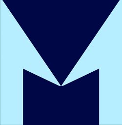
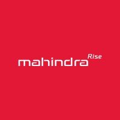

I build data systems people actually use: retrieval platforms over messy enterprise documents, and pipelines that turn two-week reporting cycles into one-hour ones. MS Applied Data Science at USC Viterbi, previously at Mercer (Marsh McLennan) and Mahindra & Mahindra.
ARTN▲ STRONG BUYanalyst consensusARTN● IPO MAY 2027MS Applied Data Science, USC ViterbiDTHN▲ 1STDatathon 2.0 winnerGPA▲ 3.9USC, after a 3.79 undergradARTN▲ OVERSUBSCRIBEDopen to full-time and Spring 2027 co-opARTN▲ STRONG BUYanalyst consensusARTN● IPO MAY 2027MS Applied Data Science, USC ViterbiDTHN▲ 1STDatathon 2.0 winnerGPA▲ 3.9USC, after a 3.79 undergradARTN▲ OVERSUBSCRIBEDopen to full-time and Spring 2027 co-opARTN▲ STRONG BUYanalyst consensusARTN● IPO MAY 2027MS Applied Data Science, USC ViterbiDTHN▲ 1STDatathon 2.0 winnerGPA▲ 3.9USC, after a 3.79 undergradARTN▲ OVERSUBSCRIBEDopen to full-time and Spring 2027 co-opARTN▲ STRONG BUYanalyst consensusARTN● IPO MAY 2027MS Applied Data Science, USC ViterbiDTHN▲ 1STDatathon 2.0 winnerGPA▲ 3.9USC, after a 3.79 undergradARTN▲ OVERSUBSCRIBEDopen to full-time and Spring 2027 co-op
01About
I'm a data scientist who likes the part where a model leaves the notebook. I'm finishing my MS at USC, working on campus as a student supervisor and student lead, and looking for data science, ML and GenAI roles.
What I do
Automating the manual
Work that only happened because a person did it by hand now runs on its own. At Mercer, a retrieval platform over years of briefings and an R pipeline rewritten in Python.
What I do
Retrieval in production
At Mahindra, an Azure RAG service behind a showroom robot and a call-centre assistant. Real customers on the other end changes how you think about guardrails.
What I do
Logic before syntax
I like sitting with a messy question until the structure underneath it is clear, then writing the code that follows from it.
What I do
Competing to learn
I compete on Kaggle because a ranked problem with a fixed deadline is the fastest way to find the gaps in my own approach.
What I do
Aiming at markets
Markets are the domain I keep circling back to: time series, index spillovers, forecasting. It's why there's a price chart on this page.
What I like
Ultimate frisbee
Picked it up at USC, where I play and serve as intramurals captain. The most fun I've had with a group of people in years.
What I like
Star Wars
A long-running fan, The Mandalorian above all. Switch this site to the dark side and you'll see where that went.
What I like
Maths
The subject that never felt like work. Most of what I enjoy about data science traces back to it.
What I like
International politics
The other system worth reading carefully, and it overlaps with markets more often than people expect.
What I like
Exploring over scrolling
Given a free evening I'd rather go find something than sit with a feed.
02Experience
Click a card for the full breakdown

Mercer (Marsh McLennan)Featured
Data Science Intern
Mumbai, India · Hybrid
Jan 2025 – Jul 2025
Marsh is an insurance broker and consultant, and most of its analytics output was locked inside documents and legacy R code. I worked on getting that reporting out of manual hands, parsing the quarterly briefing archive into something queryable, and automating two of the reports the business ships to clients.
PythonRFAISSMongoDBLangChain
View details →

Mahindra & MahindraFeatured
Data Science Intern
Mumbai, India · On-site
May 2024 – Jul 2024
Built conversational systems on a shared, reusable Azure-hosted RAG pipeline over Mahindra's vehicle data: one powers a showroom robot, the other call-centre deflection, plus a Selenium automation for the internal CMS. I worked on the backend and data layer; another team built the robot's frontend against the API I exposed.
AzureRAGGPT APIsFastAPIPostman
View details →
Flowres.io (myMRPlace)
Software Intern
Mumbai, India · Hybrid
May 2023 – Jul 2023
My first internship, on a quantitative research pipeline that answered analyst questions from transcribed talks. As the most junior person on the team, I focused on the prompt and quality-assurance side.
PythonTensorFlowPyTorchRAGOpenAI API
View details →
Open Health Systems Laboratory
Project Intern
California, US · Remote
Jan 2022 – Mar 2022
On campus at USC
Student SupervisorUSC Auxiliary ServicesOct 2025 to present
Student LeadUSC ITS, Learning EnvironmentsNov 2025 to present
Student WorkerUSC Office of International ServicesSummer 2026
03Projects
Click any project for the pipeline and full write-up